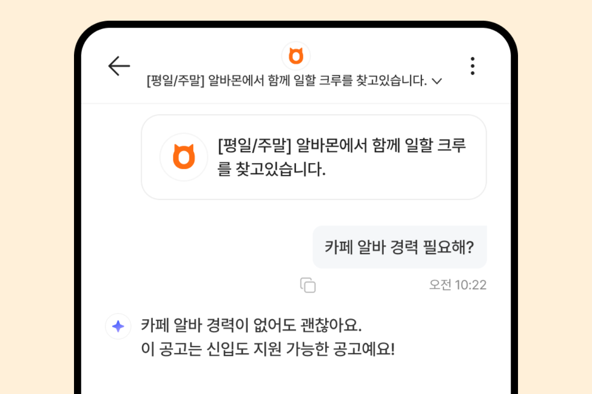
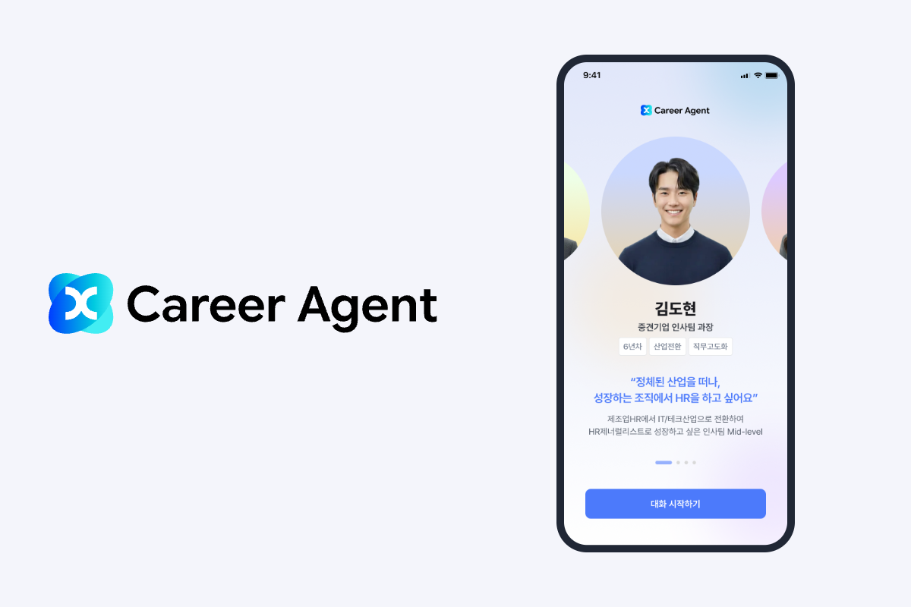

잡코리아를 바꾸되, 고객의 채용은 계속되도록
기존 고객이 서비스를 계속 이용할 수 있도록 레거시 시스템의 단계적 개편 전략을 정하고, 첫 과제인 지원자 관리 개편을 출시했습니다.
About
제품을 만들다 보면 해결할 수 있는 문제보다 먼저 해결해야 할 문제를 고르는 일이 더 어렵습니다.
고객에게 필요한 변화는 무엇인지, 지금 이 문제에 시간과 자원을 써야 하는지, 무엇을 확인하면 다음 결정을 내릴 수 있을지. 제품을 직접 설계하고 운영하면서 반복해 온 질문들입니다.
방향을 정한 뒤에는 사용자 의견과 데이터를 함께 보며 선택한 해법이 실제로 어떻게 쓰이는지 확인합니다. 예상과 다른 모습이 보이면 처음의 가정과 해결 방식을 다시 살펴 다음 개선을 정합니다.
매니저로서는 구성원이 스스로 판단하고 일을 완수할 수 있도록 돕는 데 집중합니다. 목표와 완료 기준을 함께 맞추고 해결 방법은 각자의 전문성을 살릴 수 있도록 열어둡니다.
진행 중 막힌 지점은 1:1과 과제별 피드백에서 함께 검토합니다. 개별 과제의 어려움을 살피면서 팀 전체의 우선순위와 업무 부담도 함께 봅니다. 이를 바탕으로 역할과 자원을 조정해 팀의 시간과 역량이 필요한 과제에 집중될 수 있도록 돕습니다.
사람들이 무엇에 가치를 느끼고 어떤 경험을 다시 찾는지에 관심을 두고 일해 왔습니다. 앞으로도 그 관심을 바탕으로 고객의 일상에 쓸모와 즐거움을 더하는 제품과 서비스를 만들고 싶습니다.
그렇게 만든 제품이 고객에게 계속 선택받도록 개선하고, 그 선택이 비즈니스 성과로 이어지는 데 직접 기여하고 싶습니다.
제품의 방향을 정하고, 팀과 실행하며 내린 판단을 담은 주요 프로젝트입니다.
기존 고객이 서비스를 계속 이용할 수 있도록 레거시 시스템의 단계적 개편 전략을 정하고, 첫 과제인 지원자 관리 개편을 출시했습니다.

출시 범위와 품질 기준을 정해 앱을 출시하고 제품 개선과 서비스 운영, 마케팅 예산과 사업 결산까지 맡았습니다.

응답 정책과 평가 기준을 직접 설계하고 개발팀의 코드 배포 없이 제품 담당자가 프롬프트를 수정하고 배포할 수 있는 체계를 마련했습니다.

탐색 조건의 해석과 확인 기준을 정하고 PoC로 제품화에 필요한 선결 과제를 구체화했습니다.

운영 실험으로 청취 행동 변화에 대한 가설을 검증하고 그 결과를 추천 지면과 청취 리포트 기획의 근거로 삼았습니다.
청취 경험에 맞는 콘텐츠 상품을 기획하고 제작 포맷과 공급 및 운영 체계를 정비했습니다.
고객에게 필요한 변화와 사업의 목표, 실행에 필요한 자원을 함께 놓고 우선순위를 판단합니다. 이미 진행 중인 계획도 현재의 문제에 맞는지 다시 살피고, 지금 할 일과 뒤로 미룰 일을 구분합니다. 선택한 방향의 이유와 감수할 제약을 설명해, 여러 직군이 같은 목표를 향해 움직이도록 합니다.
무엇을 알고 무엇을 아직 모르는지 구분하고, 다음 결정을 위해 필요한 근거를 정합니다. 운영 실험과 PoC, 직접 테스트처럼 상황에 맞는 방법으로 확인한 뒤 제품의 범위와 실행 순서를 조정합니다. 기대했던 결과와 실제로 관찰한 변화를 구분하고, 확인하지 못한 부분도 다음 판단에 남깁니다.
목표와 판단의 맥락을 명확히 전달하고, 각자의 전문성으로 해결할 여지를 둡니다. 일이 막히면 역할 간 의존성, 운영 부담, 공유 방식에서 원인을 함께 찾습니다. 1:1과 과제 피드백에서는 구성원이 어려워하는 판단을 함께 검토하고, 회고에서 발견한 문제는 다음 업무의 방식에 반영합니다.
업무에서 불편을 느끼면 직접 바꿀 수 있는 부분을 찾아 AI로 필요한 도구를 만듭니다. 결과의 누락과 예외를 검수하고 동료가 사용할 수 있도록 배포와 사용 안내까지 마련합니다. 도구를 만드는 데서 멈추지 않고 실제 업무에 적용해 일하는 방식을 개선합니다.